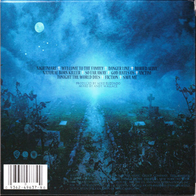
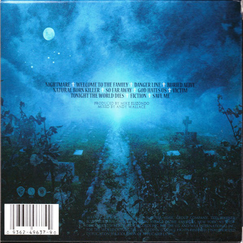

Nightmare (2010)
1. Nightmare | See lyrics | Official youtube video
2. Welcome To The Family | See lyrics
3. Danger Line | See lyrics
4. Buried Alive | See lyrics
5. Natural Born Killer | See lyrics
6. So Far Away | See lyrics
7. God Hates Us | See lyrics
8. Victim | See lyrics
9. Tonight The World Dies | See lyrics
10. Fiction | See lyrics
11. Save Me | See lyrics
12. Lost It All[iTunes Pre-order Bonus Track] | See lyrics
About the album
Here you can tell something about making the album and how exciting it was and how this has been
the best album never ever made in the whole world even though you know
it's all a big lie
'cause this ain't that good and nobody's got time for that not even your mum.